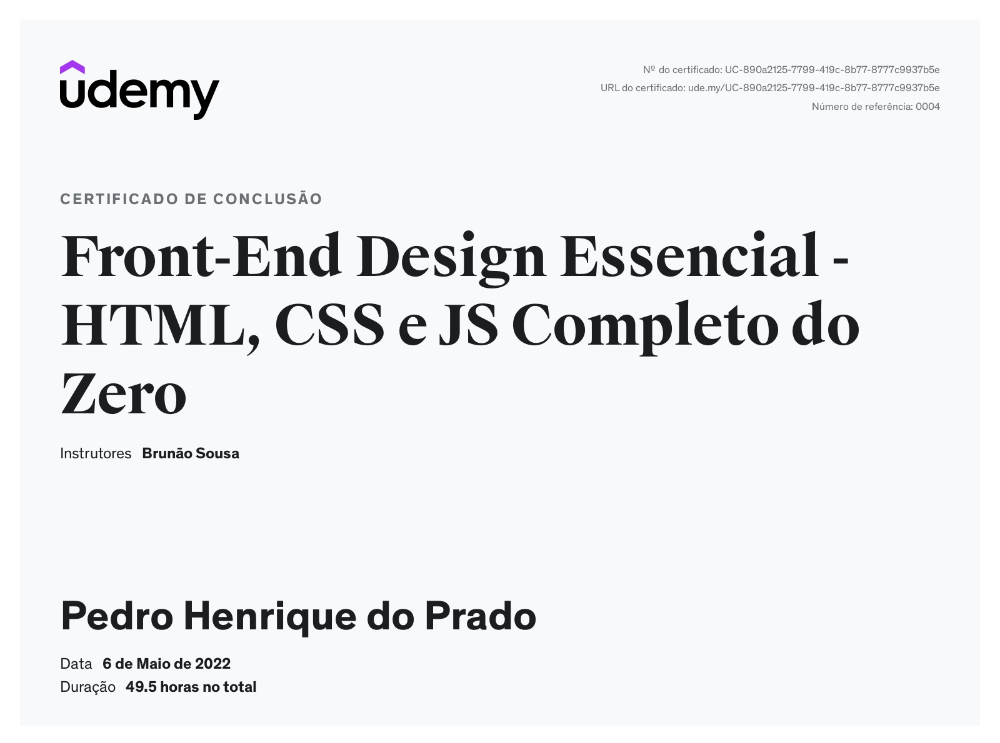
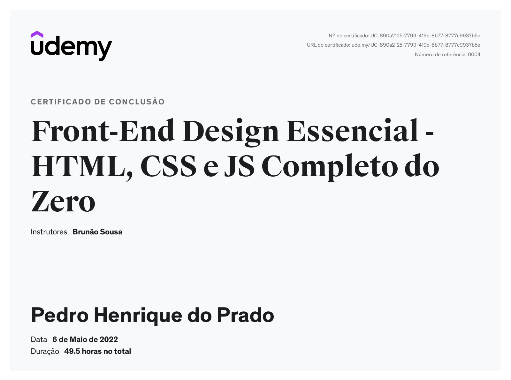
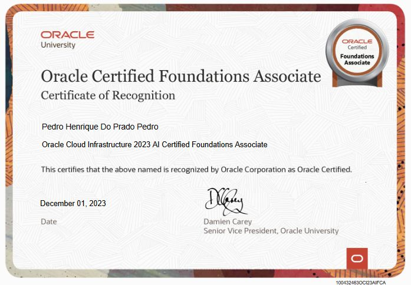
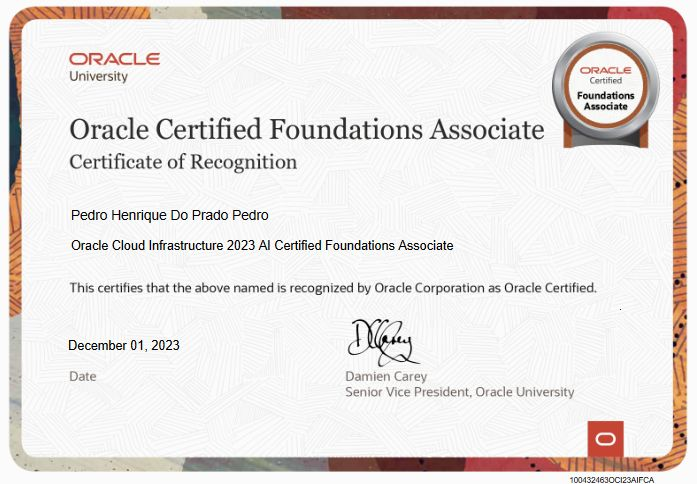

Me chamo Pedro Henrique do Prado, sou um desenvolvedor Java. Curso atualmente Ciência da computação e busco me apriorar cada vez mais.

Me chamo Pedro Henrique do Prado, sou um desenvolvedor Java. Curso atualmente Ciência da computação e busco me apriorar cada vez mais.

Sou um estudante de Ciência da Computação no 5° semestre, com habilidades em Python, mySQL e
.png)


Desenvolvi uma aplicação completa junto a colegas da faculdade, o projeto foi desenvolvido utilizando Java JDK (17), juntamente com Azure para hospedagem do banco de dados MySQL, Javascript e jquery para consumo da API via cep e apache Tomcat para hospedagem da aplicação localmente e TailwindCss, Bootstrap para estilização.
Ver projetoDesenvolvi uma aplicação completa junto a colegas da faculdade, o projeto foi desenvolvido utilizando Java JDK (17), juntamente com Azure para hospedagem do banco de dados MySQL, Javascript e jquery para consumo da API via cep e apache Tomcat para hospedagem da aplicação localmente e TailwindCss, Bootstrap para estilização.
Ver projetoCom o objetivo de colocar a prova meus conhecimentos sobre desenvolvimento web, decidi então montar este portfólio, aproveitando para compartilhar meus conhecimentos, certificados, competências e outros projetos.
Ver projetoCom o objetivo de colocar a prova meus conhecimentos sobre desenvolvimento web, decidi então montar este portfólio, aproveitando para compartilhar meus conhecimentos, certificados, competências e outros projetos.
Ver projeto
Uma API desenvolvida com Java e Spring, aqui pode-se encontrar todo o gerenciamento de uma pizzaria, desde cadastro de clientes até criação de pedidos, status, e sistema de carrinho. Tudo pronto para ser aplicado em uma pizzaria.
Ver projetoUma API desenvolvida com Java e Spring, aqui pode-se encontrar todo o gerenciamento de uma pizzaria, desde cadastro de clientes até criação de pedidos, status, e sistema de carrinho. Tudo pronto para ser aplicado em uma pizzaria.
Ver projeto

 

 



Me chamo Pedro Henrique do Prado, sou um desenvolvedor Java. Curso atualmente Ciência da computação e busco me apriorar cada vez mais.
 Home
Projetos
Certificados
Sobre
Sobre
Home
Projetos
Certificados
Sobre
Sobre